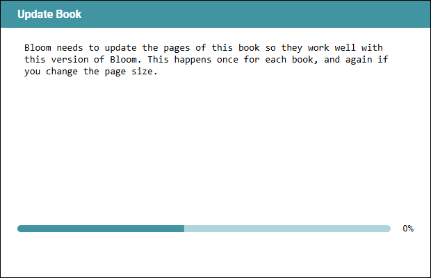

BloomDesktop, branch BL-16893-quiet-image-progress into Version6.5, at 60e10a8c. This run resized the automatic update’s dialog and opened its explanation for translation, the two things the previous report asked about. Everything is green and nothing is waiting on you.
“Update Book” (Collections tab), and since BL-16852 the automatic page update that runs before the AI image editor opens or after a page-size change, show a progress dialog that fills with a running log: a line per stage (“Updating collection settings…”, “Gathering Data…”, “Updating pages…”) and two lines per image (“Reading metadata from X”, “Writing metadata to HTML for X”), plus “Preparing image: X” for every oversized picture. A 40-image book scrolls through some 80 lines that only repeat what the percent bar already shows, and bury the one sentence explaining why the dialog appeared. That sentence was also clipped: the dialog was too narrow for the text inside it, so the right-hand end of every line was cut off part way through a letter.
The log lines are IProgress.WriteStatus calls dating from 2012, harmless while every caller showed status in a single overwriting WinForms label. BL-16870 moved Update Book onto the React progress dialog through WebProgressAdapter, whose WriteStatus appends a permanent line, and BL-16852 made the same pass run automatically. The clipping is separate: the automatic dialog’s window was 560 px wide, less than the progress box inside it asks for once the dialog’s own padding is accounted for.
| Check | Result | Notes |
|---|---|---|
| C# build | pass | BloomExe, 0 errors, before and after the base merge |
| C# tests (dotnet test) | pass | 3467 passed, 0 failed, 13 skipped, at the merged HEAD |
| TypeScript typecheck and lint | not run | no TypeScript in this PR’s diff |
| TypeScript tests (vitest) | not run | no TypeScript in this PR’s diff, and nothing it consumes changed |
| Base merge | clean | origin/Version6.5 (21 commits) merged with no conflicts; PR is mergeable |
Your two answers, implemented and checked in a running Bloom: the dialog is now 620×210 (60e10a8c, BookProcessor.cs:374), and the explanation is open for translation. The earlier commit in this pair (684a4d16) is the width fix that stopped the sentence being clipped, and Version6.5 was merged in along the way.

The dialog at 620×210, captured from a real automatic update in a running Bloom on this branch.
| Reviewer | State | Outcome |
|---|---|---|
| Local review | complete | Light pass, done inline — the whole of this run’s change is two numbers and one XML attribute. No correctness findings. |
| Devin | complete | Reviewed 60e10a8c, and the merged HEAD before it: no bugs, no investigate flags, no informational items either time. Both consultations logged on the PR. |
| CI (pr-automation) | pass | Green for this commit. |
| Reviewable | pending by design | The code-review/reviewable check tracks human file review (“8 files left”); it clears when a reviewer marks the files, not by anything preflight does. |
| Greptile and CodeRabbit | not run | CodeRabbit auto-review is off in .coderabbit.yml; Greptile is not currently working on this repo. |
The two questions from the previous report are answered and implemented: the dialog is 620×210, and the explanatory sentence is open for translation. Both were checked in a running Bloom, and the gauntlet was re-run against the result.
The branch is ready for your own final read, and then for a human reviewer.